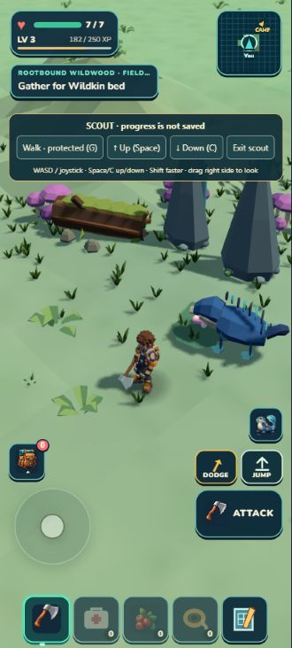
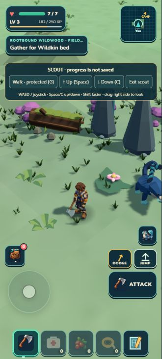

Actual matching portrait gameplay captures, using temporary cloned terrain in protected Scout mode. The right image adds broad raised/recessed planes and a restrained tint. The effect remains faint; this is a comparison, not an integrated terrain improvement. The companion moves independently and is excluded from the ground judgment.


The renderer advanced from frame 723 to 978 after applying the preview. Original geometry/material references were restored at frame 1828 and the temporary tab was closed. Collision and saved progress remained unchanged. The earlier failed array-format preview is archived separately and receives no visual credit.
Independent visual review · Candidate plan · Applied preview receipt · Live renderer check · Restoration · Browser log · Shared terrain integration map